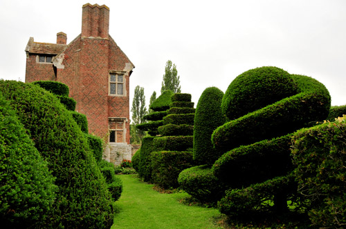
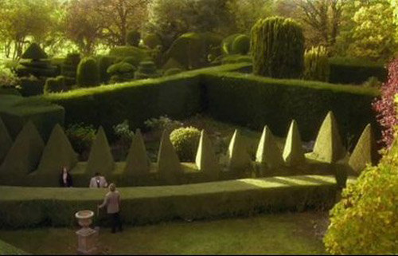
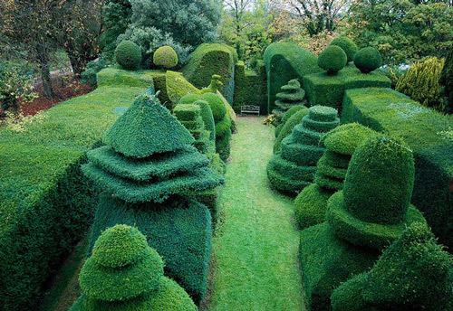
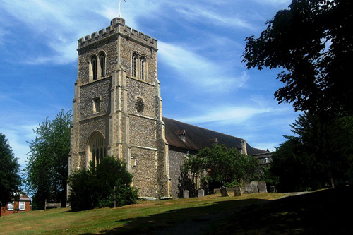
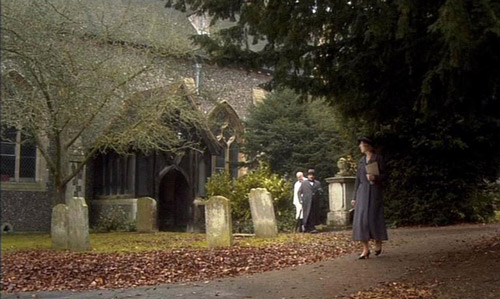

Beckley Park at Beckley near Oxford used as the location for Hallowe'en Party. A private house built in 1540 by Lord Williams of Thame, originally as a lodge for use when the Lord and a party hunted the Great Park. The Tudor brick is encircled by three moats which indicate its importance in former days.

Astonishing topiary in the garden.

Further views of the topiary.

St Ethelreda's Church in Old Hatfield, Hertfordshire used as the Church at Woodleigh Common.

Organist Elizabeth Whittaker leaves the Church.